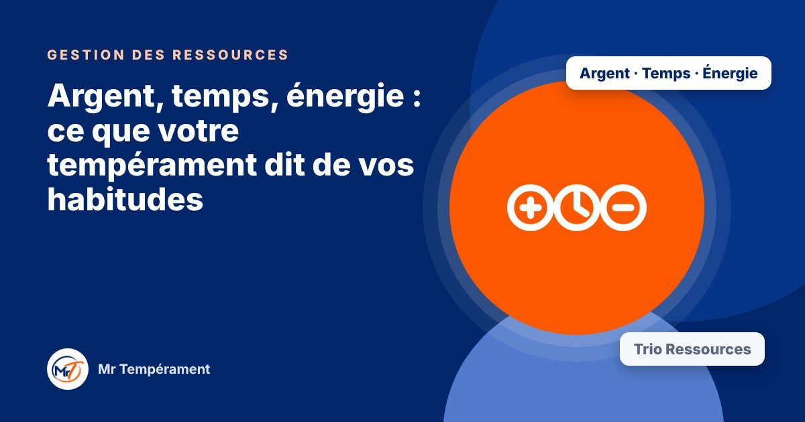

Argent, temps, énergie : ce que votre tempérament dit de vos habitudes

La manière dont vous gérez ce qui vous est confié révèle beaucoup de votre fonctionnement naturel.
Certaines personnes épargnent sans effort, d'autres dépensent avec joie. Certaines sont toujours à l'heure, d'autres ont du mal à voir passer les heures. Certaines tiennent le rythme, d'autres se vident. Ces habitudes ne sont pas qu'une affaire de volonté : elles ont souvent un lien avec le tempérament.
L'argent : sécurité, générosité, objectifs, contrôle
Selon les tempéraments, l'argent est un moyen d'atteindre des objectifs, de faire plaisir et de partager, de se sentir en sécurité, ou de maîtriser et de prévoir. Chaque approche a ses forces, et ses pièges : risque sous-estimé, dépenses d'impulsion, prudence excessive, décisions repoussées.
Le temps : rythme, souplesse, régularité, précision
Certains vont vite et accumulent, d'autres s'adaptent et s'éparpillent, d'autres tiennent leur routine et ont du mal à changer, d'autres planifient et s'enlisent dans les détails. Savoir où vous vous situez permet de choisir un outil d'organisation qui vous convient vraiment.
L'énergie : ce qui vous recharge, ce qui vous vide
Votre énergie ne se gère pas comme celle d'un autre. Certains se rechargent avec les gens, d'autres dans le calme. Certains ignorent la fatigue, d'autres l'absorbent en silence. Connaître vos signaux et vos besoins évite l'épuisement.
Un fil rouge pour mieux vous organiser
Regarder les trois ressources ensemble aide à trouver un fil rouge : vos habitudes forment un tout, et ce que vous améliorez dans un domaine aide souvent les autres.
Pour aller plus loin
Le Bilan DISC 3 domaines, avec le trio Gestion des Ressources, explore votre tempérament dans vos finances, votre gestion du temps et de votre énergie, avec une synthèse du trio.
Découvrir le trio Gestion des RessourcesFaire le test gratuit